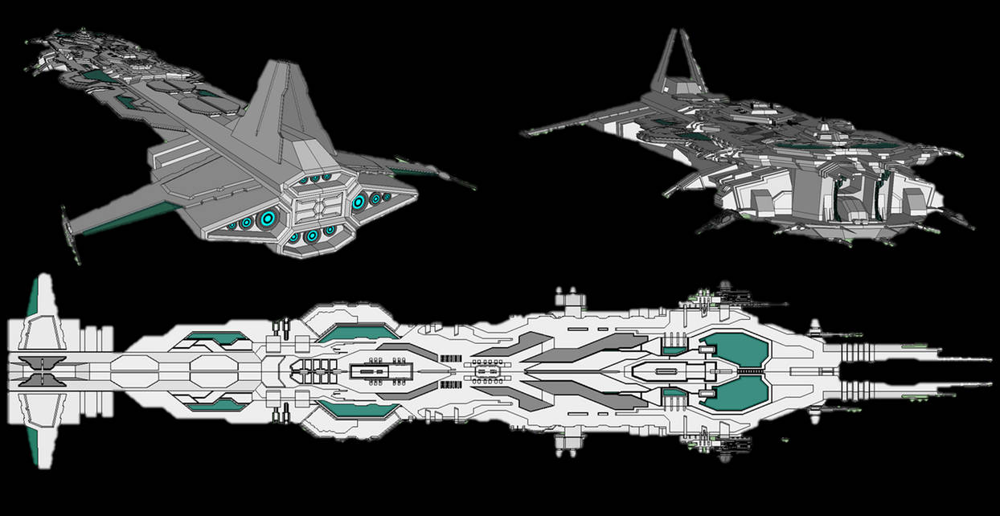

HexenKelter
It was easy to spot her. All you needed to do was look at her socks. They were never a matching pair. One would be green while the other would be blue. One would reach her knee while the other barely touched her ankle. Every other part of her was perfect, but never the socks. They were her micro act of rebellion.
HexIorn
Hexiron was orginally named as the United North American Space Coalition, but was changed to Hexiron considering it's territory is a lot different than where it had came from. Hexiron was formed in 2032 as a mix of factions that had merged under the New United States of America. It's territory was the North American continent plus United States territories like Hawaii and the Philippines. It's government is very similar to the United States, but has been altered to fit the current population that it has. It's citizens are mostly human, The Teol, and Hybrids, but it has every other race inside.
HexenKelter's Anthem
Blueprints
View designs created by Fightfire Industries and our other leading designers and manufacturers.
Learn more